- Что необходимо для подключения приема платежей через ArsenalPay?
Чтобы подключиться к приему платежей через ArsenalPay, вам нужно отправить заявку на нашем сайте. На ваш email будет отправлено письмо от нашего менеджера, который будет вам помогать на каждом этапе и ответит на все ваши вопросы. Затем нужно будет выбрать и провести техническую интеграцию для подключения сервиса приема платежей на вашем сайте.
- Могу ли я протестировать платежную систему ArsenalPay до заключения договора?
Да, конечно. Сначала все платежные операции проводятся в тестовом режиме и только после успешного прохождения теста, взаимодействие переводится в боевой режим для приема реальных платежей.
- Насколько быстро рассматривается заявка на подключение после подачи онлайн-заявки?
На основе данных, указанных в заявке, в течение 1-го рабочего дня для вас будут назначен персональный менеджер и подобраны условия сотрудничества.
- С какими банками и операторами связи вы работаете?
С банками
- ВТБ24
- Альфа-Банк
- ГазпромБанк
- РаундБанк
- Московский Индустриальный Банк
- ПримСоцБанк
И операторами связи
- МТС
- Мегафон
- Билайн
- Теле2
- Ростелеком
- Какие способы оплаты доступны клиентам ArsenalPay?
- Интернет-эквайринг (ИЭ) - оплата банковскими картами
- Мобильная коммерция (МК) - оплата с баланса мобильного
- Какие банковские карты я смогу принимать к оплате?
Международные карты VISA и MasterCard, включая VISA Electron и Maestro
- Как быстро я получу средства на банковский счет?
Средства на ваш расчетный счет перечисляются в течение трех банковских дней после отчетного дня.
- Могут ли клиенты интернет-магазина, находящиеся за пределами РФ, оплачивать покупки онлайн банковскими картами?
Да, держатели международных банковских карт могут оплачивать покупки через ArsenalPay, находясь в любой точке мира.
- Что будет, если покупки в рублях осуществляются с долларовых или евро карт?
ArsenalPay принимает карты, выпущенные в любом банке мира. Все авторизации и расчеты проходят в рублях. Для валютных карт сумма операции будет конвертирована в рубли банком-эмитентом карты по его курсу. Например, если покупка осуществляется в рублях, а банковская карта в долларах, то происходит конвертация банком-эмитентом долларов в рубли по курсу банка. Перечисление суммы покупки российским резидентам на расчетный счет происходит в рублях.
- Где я могу ознакомиться с технической документацией, необходимой для интеграции?
На сайте ArsenalPay в разделе Разработчикам.
- Сколько времени занимает процесс технической интеграции?
Процесс может занимать от 1 дня. Есть «быстрые» и «медленные» способы интеграции, все зависит от выбора варианта интеграции и от того, как быстро ваши технические специалисты реализуют наш протокол на вашей стороне.
- Как происходит интеграция платежного сервиса ArsenalPay с сайтом компании?
Tехническая интеграция не является сложным действием. Обычно, подготовительные работы занимают от 1 дня с учётом общей загруженности с обеих сторон. В первую очередь нам необходимо решить каким образом мы будем передавать информацию о совершенных платежах в онлайн режиме. У нас есть собственный простой протокол для обмена платёжной информацией, все функции реализовывать не обязательно, наши разработчики подскажут вам минимальный набор. В случае, если вы хотели бы взаимодействовать по другому протоколу, просим приложить спецификацию.
- Мой интернет-магазин построен на базе популярной CMS. Есть ли у вас готовые модули для быстрой интеграции приема платежей?
Готовые решения уже есть для 1C Bitrix, Opencart, Prestashop, Joomla, Wordpress, которые доступны для скачивания в разделе нашего сайта Разработчикам. Список модулей постоянно пополняется
- Можно ли изменить дизайн платежной формы в соответствии с оформлением нашего сайта?
Да, конечно. Вы можете дополнительно заказать кастомизацию платежных форм под дизайн вашего сайта. Возможности кастомизации будут также зависеть от выбранного типа интеграции с вашим интерент-магазином.
- Какие варианты интеграции существуют?
Варианты интеграции
- внедрение в сайт магазина единого фрейма оплаты
- отдельная платежная страница на домене ArsenalPay
- SDK для вашей платформы
- плагин для популярной CMS
- нативная интеграция с мобильным приложением
- низкоуровневое API
- Какие из представленных у вас систем оплаты являются “быстрыми”?
“Быстрая” оплата – это когда заказ оплачивается, не отходя от компьютера. Информацию об успешности оплаты интернет-магазин видит сразу. Оплата, как с банковской карты, так и с баланса мобильного, у нас являются "быстрыми" в режиме "real time". То есть, уведомление о списании приходит сразу же, как только мы получаем его от источников списания средств и сразу же перенаправляем его интернет-магазину для учета оплаты заказа (покупки) в его системе. Обычно это происходит в течение нескольких секунд.
- Поддерживает ли ArsenalPay возможность оплаты без перехода на сайт платежной системы?
Да, поддерживает. Решение, использующее встроенный фрейм (iFrame) позволяет интегрировать платежную форму ArsenalPay прямо на страницу вашего интернет-магазина. Это решение позволяет перенаправлять покупателя на платежную страницу ArsenalPay в рамках вашего сайта и при этом сохраняет безопасность передачи его данных без дополнительных требований по безопасности с вашей стороны.
- Насколько безопасно проводить платежи через платежную систему ArsenalPay?
Мы сделали всё, чтобы платежи в нашем сервисе были абсолютно безопасными. Когда вы вводите данные карты, мы защищаем их по стандарту PCI DSS. Это целый набор требований, разработанный международными платежными системами VISA и MasterCard. Вам остается только проверить URL страницы, где вы указываете данные. Он обязательно должен начинаться с https://
Вы в любой момент можете найти ArsenalPay в реестрах сертифицированных сервис-провайдеров VISA International и MasterCard Worldwide, а также скачать наш сертификат.
- Необходимо ли мне дополнительно приобретать SSL-сертификат для работы с платежным фреймом ArsenalPay?
В этом нет необходимости. Достаточно того, что единый платежный фрейм ArsenalPay уже использует SSL-сертификат для безопасной передачи информации.
- Где можно ознакомиться с полной информацией о тарифах?
Условия и тарифы обсуждаются индивидуально с каждым из клиентов.
- Нужно ли заводить новый счет для приема платежей на сайте?
Нет, можно использовать любой текущий расчетный счет в банке открытый на ваше юридическое лицо.
- Как осуществляются выплаты денежных средств на банковский расчётный счёт?
Обычным банковским переводом.
- Какова стоимость подключения к ArsenalPay?
Бесплатно
- Как определяется индивидуальный размер комиссии за услуги интернет-эквайринга и мобильной коммерции?
Индивидуальный размер комиссии за услуги ArsenalPay определяются из расчета предполагаемого или текущего оборота, категории товаров или услуг, представленных на сайте.
- Из каких частей формируется комиссия за услуги процессинга платежей?
В комиссию заложены ставки банка, оператора связи и ArsenalPay.
- Как происходит списание комиссии за услуги процессинга платежей?
В зависимости от оказываемой услуги. Либо удерживается при расчетах, либо перечисляется с вашего расчетного счета на счет ArsenalPay.
- Существуют ли минимальный и максимальный размер онлайн платежа для клиентов интернет-магазина?
Для мобильной коммерции от 10 руб. до 15.000 руб.
Для интернет-эквайринга без ограничений. Но размеры платежей разовых и в течени месяца регулируются по заявке интернет-магазина.
- В какой валюте можно получать выплаты на свой расчетный счет?
Только в российских рублях.
- При возврате средств клиенту куда возвращаются средства по каждому из способов оплаты?
В случае оплаты с банковской карты, средства возвращаются обратно на счет этой карты. Возврат осуществляется через личный кабинет ArsenalPay.
Для платежей с мобильного счета встроенных методов возврата нет, за исключением разовых обращений к источникам списания средств по вопросам возврата.
- Как вернуть деньги на банковскую карту плательщика?
В случае необходимости плательщик может отказаться от товара или услуги.
Согласно внутреннему регламенту интернет-магазина он должен прежде всего оповестить интернет-магазин о своем намерении.
Затем в вашем личном кабинете сотрудник интернет-магазина может отменить данную операцию.
- Как получить акты для бухгалтерской отчетности?
Копии в электронном виде мы будем высылать на ваш email, а подписанные и заверенные оригиналы в двух экземплярах — на почтовый адрес.
Один экземпляр вам нужно будет подписать и вернуть нам на нашу почту.
- Что делать, если цифры в актах не сходятся?
Напишите о своей проблеме на pay@arsenalpay.ru, мы обязательно разберёмся.
- 3D-Secure
3D-Secure – защищенный протокол авторизации пользователей для CNP-операций (без присутствия карты), который используется как дополнительный уровень безопасности для оплаты товаров и услуг в Интернете. Изначально протокол был предложен платежной системой VISA, но потом с некоторыми изменениями был принят и другими. У VISA протокол называется Verified by Visa (VbV), у MasterCard -MasterCard SecureCode (MCC).
Данный протокол добавляет дополнительный шаг авторизации пользователя при оплате покупки в интернет-магазине. На первом шаге используется: номер карты, срок ее действия, имя держателя карты и код проверки ее подлинности (например, CVC2). На втором шаге, используя протокол 3D-Secure, сайт магазина показывает страницу банка - эмитента карты, на которой предлагается ввести дополнительный защитный код (обычно 6 цифр). Его клиент банка может получить: посредством СМС-сообщения на свой мобильный телефон, с помощью карточки разовых кодов или специального устройства, а также код может быть постоянным, заранее установленным самим клиентом.
Вся передаваемая информация от покупателя сохраняется на платежном сервере банка-эмитента, и интернет-магазин не имеет к ней никакого доступа. Это защищает данные от хищения.
Не все онлайновые магазины и банки поддерживают 3D-Secure. Эта технология не является обязательной и защищает в первую очередь торговую точку и банк от мошеннических операций. При использовании ими протокола 3D-Secure ответственность за такие операции переносится с торговой точки на банк или клиента. На сегодняшний день магазинов, которые принимают платежи строго с использованием 3D-Secure, очень мало. Узнать их можно по размещенным на сайте логотипам: MasterCard SecureCode и/или Verified by Visa.
- API ArsenalPay
API ArsenalPay — это набор готовых классов, процедур, функций, структур и констант, предоставляемых сервисом ArsenalPay для упрощенной интеграции приема платежей на сайте или в мобильном приложении клиента. API ArsenalPay предоставляется техническим специалистам клиента после подачи заявки на подключение.
- ArsenalPay Payment SDK
ArsenalPay Payment SDK — это набор библиотек для интеграции с сервисом ArsenalPay разработчиками разных платформ. Ознакомиться с подробной информацией и скачать библиотеки для различных платформ можно в разделе "Разработчикам".
- Chargeback
Chargeback — процедура опротестования транзакции банком-эмитентом (в целях защиты прав плательщика), при которой сумма платежа безакцептно списывается с получателя (банка-эквайера) и возвращается плательщику, после чего обязанность доказательства истинности транзакции ложится на получателя. Технология возврата платежа используется в системах взаиморасчетов по пластиковым картам.
- CMS
CMS — (от англ. content management system) — это система управления содержимым (контентом), используемая для обеспечения и организации совместного процесса создания, редактирования и управления контентом на сайтах предприятий электронной коммерции. Использование CMS значительно упрощает и удешевляет процесс создания и управления сайтом. Платежные модули ArsenalPay разработаны для большинства популярных CMS: Joomla, 1С-Битрикс, Wordpress, OpenCart, PrestaShop. Просто активируйте платежный модуль, если ваш сайт работает на базе CMS из нашего списка. Если не нашли своей CMS, отправьте нам заявку, мы создадим модуль для вашей CMS.
- Fraud (фрод, мошенничество)
Fraud — это вид мошенничества в области информационных технологий. В сфере безналичных платежей под фродом принято понимать несанкционированные действия и неправомочное использование данных банковских карт, не принадлежащих мошенникам. Фрод — это фактор риска, влекущий за собой возможность возникновения финансовых и имиджевых потерь для интернет-бизнеса. Для минимизации вероятности возникновения мошеннических платежных операций интернет-магазины пользуются услугами платежных сервис-провайдеров, берущих на себя мониторинг и отсеивание мошеннических платежных операций.
- Fraud monitoring (фрод-мониторинг)
Fraud monitoring — деятельность по поиску и блокировке попыток совершения мошеннических платежных операций на сайтах предприятий электронной коммерции. Деятельность по мониторингу мошеннических платежных операций осуществляют Fraud Management System (FMS), которая позволяют автоматически выявлять и блокировать подозрительные операции в соответствии с заданными правилами. ArsenalPay обладает развитой системой фрод-мониторинга, обеспечивающей защиту предприятий электронной коммерции от мошеннических операций.
- IFrame
IFrame — это "фрейм", позволяющий встроить в страницу сайта стороннее содержимое: скрипт, контент и т.д. Другими словами, IFrame — это возможность встроить один html-документ в другой html-документ. При работе с ArsenalPay интернет-магазин может использовать IFrame и интегрировать платежную форму в страницу своего сайта: в этом случае плательщик будет совершать оплату на сайте интернет-магазина, не переходя на платежную страницу ArsenalPay. Ознакомиться с примером IFrame можно в разделе "Разработчикам".
- Reversal (реверсал, отмена оплаты)
Reversal — процедура отмены операции оплаты с использованием банковской карты, по которой была проведена авторизация. Операция reversal подразумевает полный возврат денежных средств (с учетом возможной разницы курсов валют при оплате и возврате средств) по ранее заключенной и оплаченной с помощью банковской карты сделке в интернет-магазине предприятия. Reversal возможен только на полную сумму оплаты и осуществляется, если возврат средств производится по инициативе интернет-магазина, а совершенный с помощью банковской карты платеж был мошенническим.
- Refund (рефанд, возврат средств)
Refund — это процедура полного или частичного возврата средств покупателю, ранее оплатившего товар или услугу с помощью банковской карты на сайте интернет-магазина. Чаще всего операция refund совершается для проведения полного возврата средств, когда причиной возврата является отказ покупателя от сделки. Вы можете делать возврат средств в своем личном кабинете ArsenalPay.
- TLS
Криптографический протокол TLS (Transport Layer Security) — это протокол, обеспечивающий безопасность передачи данных. Протокол TLS использует асимметричную криптографию для аутентификации, симметричное шифрование для конфиденциальности и коды аутентичности сообщений для сохранения целостности сообщений. ArsenalPay использует TLS для обеспечения безопасности передачи платежных данных. В настоящее время известно, что протокол SSL не является безопасным, по причине обнаружения уязвимостей, таких как HeartBleed и должен быть исключен из работы в пользу TLS.
- Автоплатеж (автоматический платеж, реккурент)
Автоплатеж — это возможность безакцептного списания средств с банковской карты плательщика. Автоплатеж используется для оплаты периодических услуг — ЖКХ, подписки, доступ к сервисам, оплата связи и др. Для использования автоплатежа пользователь сервиса должен произвести первую оплату в стандартном режиме и подтвердить согласие на периодическое списание средств с банковской карты. ArsenalPay поддерживает автоплатежи как по банковским картам, так и при платежах с помощью баланса мобильного телефона.
- Авторизация платежа
Авторизация платежа — это процедура получения разрешения банка-эмитента на совершение платежной операции. Когда плательщик уже заполнил платежную форму, нажал "Оплатить" и ожидает результата оплаты в течение нескольких секунд, в это время происходит авторизация платежа.
- Анкета ТСП (мерчанта)
Анкета мерчанта — это один из базовых документов, на которых основываются взаимоотношения мерчанта и ArsenalPay. На основании данных анкеты ArsenalPay принимает решение о возможности сотрудничества и готовит коммерческое предложение. Анкета заполняется мерчантом сразу после отправки заявки на подключение и направляется на рассмотрение персональному менеджеру.
- Банковская карта
Банковская карта — это инструмент безналичных расчетов, предназначенный для совершения держателем карты операций с денежными средствами, находящимися на счету, размещенном у банка-эмитента в соответствии с договором.
- Банк-эквайер
Банк-эквайер — это российский или зарубежный банк, который является одним из участников трехстороннего договора, заключаемого между ArsenalPay, банком-партнером и интернет-магазином перед началом приема безналичных платежей на сайте интернет-магазина. ArsenalPay интегрирован с множеством банков для обеспечения надежного и наиболее выгодного сервиса. Банк-эквайер осуществляет проведение операций оплаты товаров и услуг, совершаемых с использованием банковских карт через процессинговый центр ArsenalPay, с которым интернет-магазин заключил эквайринговый договор.
- Банк-эмитент
Банк-эмитент — это организация, осуществляющая деятельность по выпуску и/или выдаче банковских карт и заключающая договоры с клиентами о совершении операций и расчетов с использованием выданных им карт.
- Онлайн валидация
Онлайн-валидация — проверка держателя карты путем блокировки произвольной суммы (в рублях, EUR, USD) и подтверждения плательщиком размера заблокированной суммы (после подтверждения деньги на карте автоматически разблокируются). Данный дополнительный уровень безопасности особенно актуален для проверки карт, не подписанных на 3-D Secure.
- Виртуальная карта. Оплата виртуальной картой.
Виртуальная карта — карта, предназначенная только для оплаты покупок и проведения расчетов в Интернет. Такие карты нельзя использовать в торгово-сервисной сети или в банкоматах. Виртуальная карта может не иметь материального носителя и выпускаться в электронном виде под конкретные покупки или транзакции, а может быть выпущена на материальном носителе.
Она работает без ПИН-кода. Для расчетов используются следующие параметры: номер карты, срок ее действия и трехзначный код для проверки подлинности карты. У платежной системы MasterCard Worldwide код носит название CVC2, у Visa International - CVV2.
Использование таких карт при расчетах в Интернете повышает уровень безопасности проведенных операций, поскольку виртуальная карта позволяет не раскрывать реквизиты основной карты.
Создавая виртуальную карту, вы сами устанавливаете лимит по ней. Можно установить лимит разового списания, превысить который будет нельзя, что также снизит риск мошенничества. Карту можно самостоятельно заблокировать или вообще удалить.
Виртуальные карты выпускаются в российских рублях, долларах США и евро и бывают как одноразового, так и многоразового использования. Срок их действия может варьироваться от одного дня до нескольких лет. Виртуальные карты можно приобрести не только в отделениях банка (в виде пластиковой карты), но и через Интернет, банкоматы или мобильную связь (без материального носителя). Пополнять виртуальную карту можно в отделениях банка или через системы дистанционного банковского обслуживания. Банками могут устанавливаться ограничения по сумме и количеству проведенных операций по виртуальной карте в месяц.
Самые распространенные виртуальные карты — VISA Virtual и MasterCard Virtual.
Стоит отметить, что виртуальных кредитных карт не бывает. Виртуальная карта является дебетовым инструментом, который позволяет расходовать лишь заранее внесенные на счет денежные средства.
- Данные о держателях карт
Данные о держателях карт – информация, нанесённая на платёжную карту, а также содержащаяся на её магнитной полосе (чипе) или ассоциированная с ней, включает в себя: номер карты (PAN), дату окончания срока действия карты (EXPIRATION DATE), имя держателя карты (CARDHOLDER NAME), сервисный код (SERVICE CODE), проверочное значение (CVC2/CVV2), содержимое магнитной полосы или чипа (TRACK), ПИН-код и его шифрограмму (PIN и PIN-block).
- Дата окончания срока действия карты (EXPIRATION DATE)
Дата окончания срока действия карты (EXPIRATION DATE) – дата, при наступлении которой, платёжная карта становится недействительна, наносится на её лицевую сторону.
- Держатель карты (CARDHOLDER)
Держатель карты – лицо, на чьё имя была выпущена платёжная карта, либо любое лицо, авторизованное для использования карты.
- Доступность информации
Доступность – свойство информации быть доступной и используемой авторизованной стороной.
- Имя держателя карты (CARDHOLDER NAME)
Имя держателя карты (CARDHOLDER NAME) – имя и фамилия человека, которому банк предоставил право распоряжения платёжной картой, наносится на её лицевую сторону.
- Интернет-магазин (сайт предприятия электронной коммерции)
Предприятие электронной коммерции — это виртуальное пространство реализации товаров или услуг, организованное с помощью специализированных средств, включая торговый сайт в Интернет, позволяющих компании (предпринимателю) принимать и обслуживать заказы на приобретение и доставку товара или оказания услуг через Интернет.
- Интернет-эквайринг
Интернет эквайринг — общий термин, которым обозначается сервис приема платежей по банковским картам на сайтах интернет-магазинов и онлайн-сервисов, а также в мобильных приложениях с использованием специально разработанного web-интерфейса. Интернет-эквайринг — это вид деятельности, с участием банков-эквайеров, осуществляющих расчеты с организациями электронной коммерции по операциям, совершаемым с использованием банковских карт, и платежных сервис-провайдеров (ArsenalPay и др.), обеспечивающих безопасность платежей с помощью протокола аутентификации 3-D Secure и TLS, а также отвечающих за фрод-мониторинг платежей.
- Информационная безопасность
Информационная безопасность – обеспечение конфиденциальности, целостности и доступности информации, а также таких свойств информации, как подлинность, неотказуемость, достоверность.
- Источники списания средств (ИСС)
Источники списания средств (ИСС) – баланс мобильного телефона с привязкой к мобильному оператору (в случае мобильной коммерции) и банковская карта с привязкой к банку (в случае интернет-эквайринга), c которых происходит списание в пользу интернет-магазина.
- Код авторизации
Код авторизации — это буквенно-цифровой код, получаемый плательщиком в результате авторизации платежа.
- Конфиденциальность информации
Конфиденциальность – свойство информации не быть доступной неавторизованным лицам, сторонам или процессам или раскрытой ими.
- Критичные аутентификационные данные
Критичные аутентификационные данные – содержимое магнитной полосы или чипа (TRACK), проверочное значение (CVC2/CVV2), ПИН-код и его шифрограмма (PIN, PIN-block).
- Личный кабинет ArsenalPay
Личный кабинет ArsenalPay – это персональный веб сервис, предоставляемый каждому ТСП ArsenalPay. C помощью "Личного кабинета" можно вести онлайн-мониторинг всех операций, совершаемых на сайте, просматривать статистику по платежам, а также работать с транзакциями в режиме реального времени (подтверждать, аннулировать, выполнять полный и частичный возврат средств), выгружать отчетные данные.
- Международная платёжная система
Международная платёжная система – сообщество банков, установившее правила обращения платёжных карт (Visa, MasterCard, American Express, Discovery, JCB). ArsenalPay является официальным сервис-провайдером самых популярных международных платежных систем в мире VISA и MasterCard. В России Visa и MasterCard занимают 90% рынка банковских карт.
- Мерчант-аккаунт (торговый счет)
Мерчант-аккаунт — это виртуальный персональный торговый счет предприятия электронной коммерции, регистрируемый в банке-эквайере на основании поданной заявки на подключение интернет-магазина (онлайн-сервиса) к ArsenalPay. Мерчант-аккаунт предназначен для осуществления расчетов по операциям, совершенным с помощью банковских карт, в счет оплаты товаров или услуг на сайте предприятия электронной коммерции.
- Мобильное приложение
Мобильное приложение — это специально разработанное приложение под конкретную мобильную платформу (iOS, Android, Windows Phone). Обычно приложение разрабатывается на языке высокого уровня и компилируется в нативный код ОС, дающий максимальную производительность.
Любой компании, которая достигла оборота 1 млн. рублей в месяц, мы разработаем мобильные приложения для iOS и Android бесплатно.
Мы разрабатываем красивое и очень удобное мобильное приложение для личного кабинета ArsenalPay. Следите за новостями.
- Номер карты (PAN)
Номер карты (PAN) — номер, идентифицирующий платёжную карту, наносится на её лицевую сторону.
- Операции CNP (card not present)
Операции CNP — операции по карте без ее физического присутствия. Они относятся к классу транзакций повышенного риска, так как для проведения платежа не требуется присутствие держателя карты и его подпись. Для осуществления операции достаточно знать номер, срок действия и в ряде случаев код проверки подлинности карты. Все платежи по виртуальным картам являются операциями CNP.
Если при проведении CNP-операций не использовался защищенный протокол 3D-secure или аналогичный ему, то ответственность за мошенничество возлагается на обслуживающий банк. Кредитная организация, в свою очередь, переносит ее на торгово-сервисное предприятие, на сайте которого была произведена покупка товара или услуги по украденным реквизитам карты.
Следует отметить, что большинство онлайновых магазинов, несмотря на запреты платежных систем, хранят у себя на серверах информацию по пластиковым карточкам. Это небезопасно, так как при взломе сервера мошенниками происходит кража сразу всех данных по картам. Вид мошенничества по CNP-операциям находится на втором месте в мире после подделки банковских карт.
Большинство банков имеют техническую возможность запретить CNP-операции по карте. Такое ограничение банк может применить по желанию клиента. В этом случае пластиком можно будет пользоваться только физически.
- Оплата в один клик
Оплата в один клик — это функционал, позволяющий интернет-магазину принимать платежи по банковским картам без необходимости ввода полных реквизитов карты. Совершение платежа в один клик доступно только авторизованным пользователям интернет-магазина. Для совершения платежа в один клик покупателю нужно ввести только CVC код и пройти 3-D Secure авторизацию.
- ПИН-код и его шифрограмма (PIN, PIN-block)
ПИН-код – значение, используемое для авторизации платёжной транзакции на банкоматах и POS-терминалах и его шифрограмма.
- Платежная форма
Самый быстрый способ интеграции. ArsenalPay разработал удобную и понятную платежную форму.
- Поставщик услуг
Поставщик услуг — организация, оказывающая услуги в индустрии платёжных карт, связанные с обработкой платёжных транзакций. Примерами поставщиков услуг являются банки-эмитенты, банки-эквайеры, платёжные шлюзы, хостинг-провайдеры.
- Проверочное значение (CVC2/CVV2)
Проверочное значение (CVC2/CVV2) — значение, используемое для авторизации платёжной транзакции без считывания магнитной полосы (чипа) карты, наносится на её оборотную сторону.
- Процессинг
Процессинг — это процесс обработки данных, используемых при совершении платежных операций.
Процессинг — основной род деятельности процессинговых центров (провайдеров платежных сервисов, платежных сервис-провайдеров). ArsenalPay является одним из крупнейших в России независимых процессинговых центров.
- Процессинговый центр
Процессинговый центр – подразделение в организации, ответственное за обработку платёжных транзакций, а также информационная инфраструктура, предназначенная для обработки платёжных транзакций. ArsenalPay является одним из надежных независимых процессинговых центров (провайдеров платежных сервисов, платежных сервис-провайдеров) в России.
- Ребилл
Ребилл — регулярные платежи, которые используются для проведения периодических платежей без участия Покупателя, чтобы снизить неудобство пользователя от необходимости периодической самостоятельной инициации платежа. Также использование ребилла позволяет вашим покупателям совершать оплату товара с помощью банковской карты без ввода полных платежных реквизитов, сократив процедуру онлайн оплаты до нескольких секунд. Прием платежей с использованием процедуры ребилла не уступает по уровню безопасности стандартной процедуре оплаты и соответствует требованиям безопасности международных платежных систем. Часть информации о транзакции в зашифрованном виде хранится на стороне банка, часть информации о транзакции в зашифрованном виде хранится на стороне ArsenalPay. В момент совершения оплаты данные собираются вместе, и платеж проходит.
- Сервисный код (SERVICE CODE)
Сервисный код (SERVICE CODE) — служебное значение, содержащееся на магнитной полосе (чипе) карты.
- Система информационной безопасности
Система информационной безопасности — совокупность защитных мер, защитных средств и процессов их эксплуатации, включая ресурсное и административное (организационное) обеспечение.
- Система менеджмента информационной безопасности
Система менеджмента информационной безопасности — часть менеджмента организации, предназначенная для создания, реализации, эксплуатации, мониторинга, анализа, поддержки и совершенствования системы обеспечения информационной безопасности.
- Система обеспечения информационной безопасности
Система обеспечения информационной безопасности – совокупность системы информационной безопасности и системы менеджмента информационной безопасности организации.
- Системы фрод-мониторинга — Fraud Management System (FMS)
Системы фрод-мониторинга — Fraud Management System (FMS) позволяют в соответствии с заданными правилами автоматически выявлять и блокировать подозрительные операции. Анализ может производиться как в реальном времени, так и после завершения операции. Cистемы фрод-мониторинга входят в комплексный сервис платежных сервис-провайдеров. ArsenalPay обладает развитой ситемой фрод-мониторинга, обеспечивающей защиту предприятий электронной коммерции от мошеннических операций. Системы фрод мониторинга учитывают следующие показатели: суммы платежей, назначение платежей, среднее/общее количество операций и их сумма за интервал времени, тип канала, IP/MAC-адреса и их география, "черные" и "белые" списки получателей и т.п.
- Содержимое магнитной полосы или чипа (TRACK)
Содержимое магнитной полосы или чипа — вся информация, содержащаяся на магнитной полосе (чипе) карты.
- Совет PCI SSC (Payment Card Industry Security Standards Council)
Совет PCI SSC — Совет по стандартам безопасности индустрии платёжных карт – международный регулирующий орган в сфере безопасности обращения платёжных карт.
- Стандарт PA-DSS (Payment Application Data Security Standard)
Стандарт PA-DSS — стандарт безопасности данных в платёжных приложениях – документ, определяющий требования к приложениям, обрабатывающим данные о держателях карт. Приложения, сертифицированные по стандарту PA DSS, могут обрабатывать данные банковских карт на своей стороне без интеграции платежной формы платежного сервис-провайдера в приложение.
- Стандарт PCI DSS (Payment Card Industry Data Security Standard)
Стандарт PCI DSS — стандарт безопасности данных индустрии платёжных карт – документ, определяющий требования к поставщикам услуг и торгово-сервисным предприятиям по обеспечению безопасности обращения платёжных карт. ArsenalPay обладает сертификатом PCI DSS 3.2 Level 1
- Торгово-сервисное предприятие (ТСП)
ТСП (мерчант) — организация, принимающая платёжные карты к оплате за товары и услуги. В терминах Arsenal Pay – это торгово-сервисное предприятие, состоящее в договорных отношениях с Arsenal Pay.
- Целостность
Целостность — свойство сохранения точности и полноты информации.
- Эквайринг
Эквайринг — это процесс приёма платёжных карт к оплате за товары и услуги.
Различают банкоматный (ATM) эквайринг — выдачу наличных по платёжной карте с использованием банкомата,
торговый (POS, point of sale) эквайринг – приём платёжных карт к оплате за товары и услуги торгово-сервисных предприятий с использованием POS-терминалов и Интернет-эквайринг – приём платёжных карт к оплате за товары и услуги с использованием средств электронной коммерции. ArsenalPay передает данные плательщика в банк-эквайер по защищенным каналам связи в зашифрованном виде.
- Электронный кошелек
Электронный кошелек — это программное обеспечение, позволяющее производить операции пополнения и оплаты с помощью электронных денег. Самые популярные в России электронные кошельки - Яндекс.Деньги, WebMoney, QIWI Кошелек, Деньги@Mail.ru. ArsenalPay поддерживает возможность приема платежей не только с помощью банковских карт, но и с помощью популярных электронных кошельков с выплатами на расчетный счет компании в банке.
- Эмиссия
Эмиссия — процесс выпуска платёжных карт и их персонализации.
- Как совершать платежи в интернет магазине с помощью банковской карты Visa/Mastercard?
Как совершать платежи на сайте по картам, покажем на примере оплаты услуг из раздела Онлайн платежи, доступном на сайте ArsenalPay. Оплата картами в интернет магазинах, подключенных к платежной системе ArsenalPay выглядит аналогично.
Пошаговая инструкция:
- В разделе Онлайн платежи выберите услугу, доступную оплатой банковскими картами, которую хотите оплатить. Услуга должна быть доступна для оплаты банковскими картами. 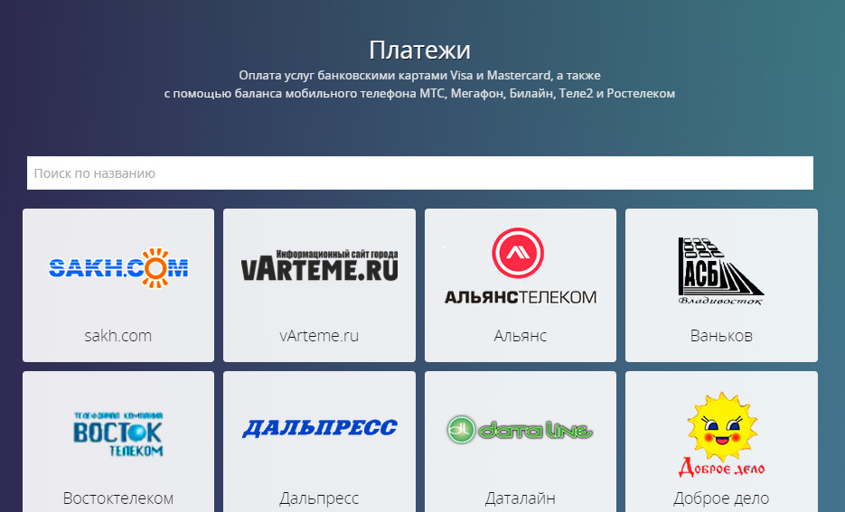
- Введите лицевой счет (номер получателя) и сумму к оплате, после чего нажмите на кнопку “Перейти к оплате по карте”. 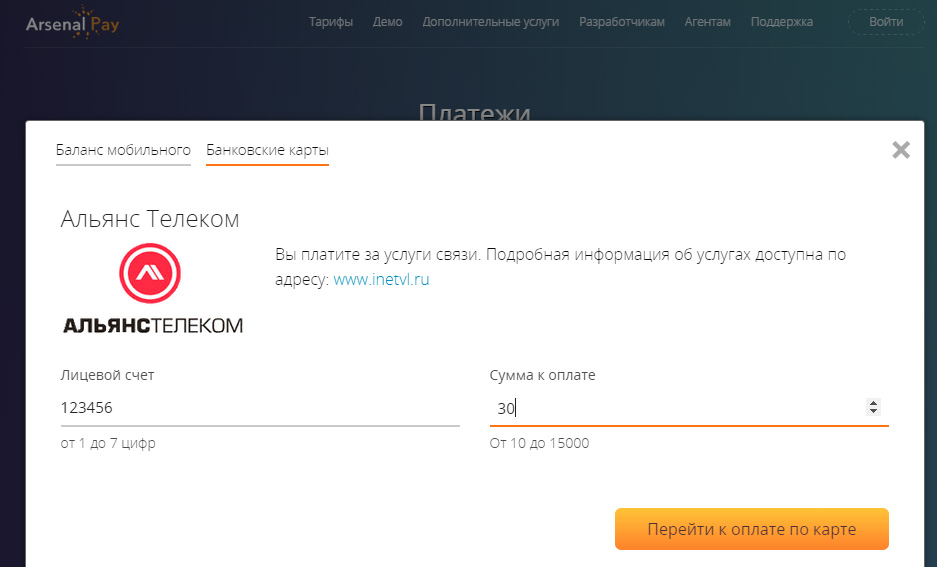
- Вы попадёте на страницу ввода данных карты. Проверьте правильность выбранной услуги и суммы к оплате. Заполните номер, срок действия, имя и фамилию владельца, код CVV2/CVC2 карты и нажмите на кнопку “Оплатить”. 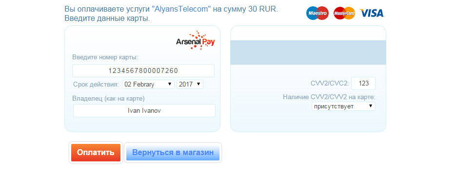
- Если ваша карта подключена к 3DSecure (3DS), потребуется ввести дополнительный код подтверждения на странице банка. Для карт без 3DS этот шаг будет пропущен. 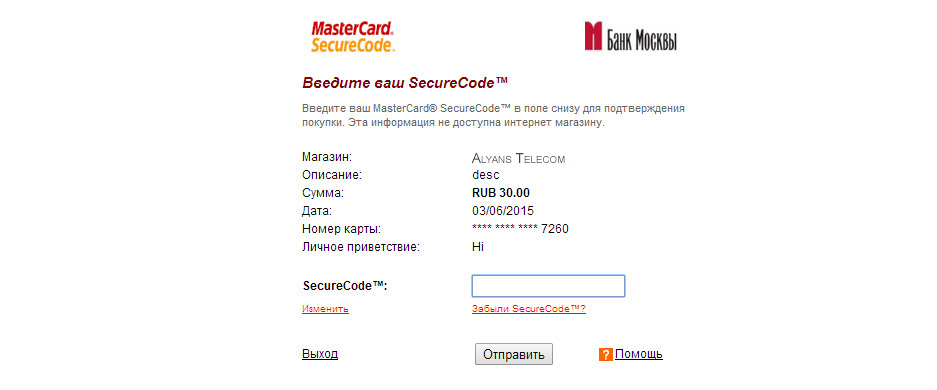
- Если всё введено верно, вы будете перенаправлены на страницу с информацией об успешной оплате.
Платежная система Arsenal Pay предлагает своим клиентам доступный интернет-эквайринг для вашего сайта. Вы можете подключить прием платежей по банковским картам VISA и Mastercard у себя на сайте, а также включить себя в раздел Онлайн платежи на нашем сайте, отправив нам заявку. Познакомиться с тарифами можно в разделе Тарифы.
- Как сделать перевод с карты на карту?
Чтобы перевести деньги с вашей банковской карты на другую, необходимо знать лишь номер карты получателя. Переводы возможны для карт Visa и Mastercard.
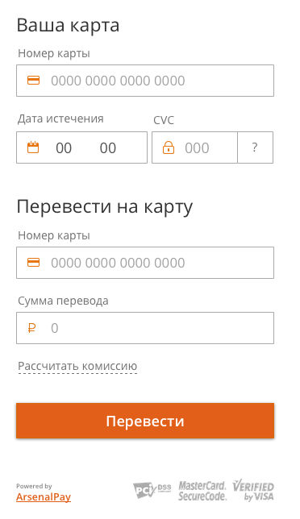Пошаговая инструкция:
- Введите данные вашей карты: номер, срок действия, код CVC и сумму. Введите номер карты, на которую вы хотите сделать перевод. Нажмите кнопку “Перевести”.
- Подтвердите перевод секретным паролем. Обычно это одноразовый пароль, который приходит по смс. Некоторые банки могут назначать постоянный секретный пароль. Ваша карта должна быть подключена к технологии 3DSecure (каждая операция по карте подтверждается секретным паролем).
- Всё, перевод успешно завершён! Далее открывается страница с результатом операции.
- Оплата услуг со счета мобильного телефона – Мегафон
«Мобильные платежи» для абонентов МегаФон — простой и удобный способ оплаты. Для оплаты с баланса вашего мобильного необходимо ввести номер телефона и подтвердить оплату ответом на полученное SMS: все очень просто и быстро!
Пошаговая инструкция:
- Выберите услугу или товар, который планируете оплатить.
- Аккуратно заполните необходимые поля в форме платежа и нажмите кнопку «Отправить SMS с подтверждением». 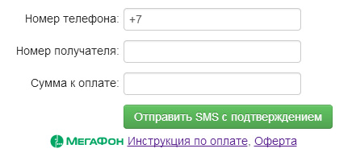
- На Ваш мобильный телефон поступит SMS с запросом на подтверждение платежа и указанием суммы с учетом комиссии. Сумма будет списана с Вашего мобильного счета только после подтверждения платежа. 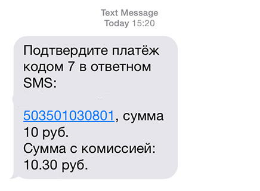
- Отправьте ответное SMS с кодом подтверждения платежа, следуя инструкции в SMS-сообщении. (Отсутствие ответа на SMS в течение 15 минут расценивается как отказ от оплаты)
- Если Вы подтвердили заказ, Вам поступит SMS с подтверждением оплаты и номером заказа.
Условия и ограничения на "Мобильный платёж":
- Стоимость отправки SMS для абонентов МегаФон — бесплатно.
- Услуга доступна всем абонентам «МегаФон», за исключением юридических лиц и абонентов, обслуживающихся по кредитной системе расчетов.
- Услугой нельзя воспользоваться при финансовой блокировке номера.
- Сумма едино-разового платежа может составлять от 10 до 5 000 руб.
- Максимальная сумма платежей за сутки 15 000 руб.
- Минимальная сумма остатка денежных средств на Лицевом счете Абонента после совершения платежа — 10 руб.
Пользуясь услугой МегаФон «Мобильные платежи», Вы соглашаетесь с условиями ее предоставления. Актуальную информацию об услуге «Мобильный платеж» уточняйте на странице сайта МегаФон.
- Оплата услуг со счета мобильного телефона – Билайн
Услуга «Мобильный платеж» для абонентов Билайн — простой и удобный способ оплаты. Для оплаты с баланса вашего мобильного необходимо ввести номер телефона и подтвердить оплату ответом на полученное SMS: все очень просто и быстро!
Пошаговая инструкция:
- Выберите услугу или товар, который планируете оплатить.
- В форме платежа аккуратно заполните необходимые поля и нажмите кнопку «Отправить SMS с подтверждением». 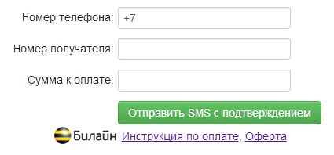
- На ваш мобильный телефон поступит SMS с запросом на подтверждение платежа и указанной суммы с учетом комиссии. Сумма будет списана с вашего мобильного счета только после подтверждения платежа.
- Отправьте ответное SMS с кодом подтверждения платежа, следуя инструкции в SMS-сообщении. (Отсутствие ответа в течение 30 минут расценивается как отмена оплаты)
- Если вы подтвердили заказ, вам поступит SMS с подтверждением оплаты и номером заказа.
Условия и ограничения услуги "Мобильный платёж":
- Сумма единоразового платежа может составлять от 10 до 5 000 руб.
- Максимальная сумма платежей за сутки 15 000 руб., максимум 10 транзакций.
- Минимальная сумма остатка денежных средств на лицевом счете абонента после совершения платежа – 50 руб. (для абонентов предоплатной системы расчетов).
Пользуясь услугой Билайн «Мобильный платеж», Вы соглашаетесь с условиями ее предоставления. Актуальную информацию об услуге «Мобильный платеж» уточняйте на странице сайта Билайн.
- Оплата услуг со счета мобильного телефона – МТС
Оплата с мобильного счета для абонентов МТС — простой и удобный способ оплаты. Для оплаты с баланса вашего мобильного необходимо ввести номер телефона и подтвердить оплату ответом на полученное SMS: все очень просто и быстро!
Пошаговая инструкция:
- Выберите услугу или товар, который планируете оплатить.
- В форме платежа аккуратно заполните необходимые поля и нажмите кнопку «Отправить SMS с подтверждением». 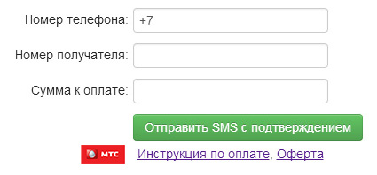
- На ваш мобильный телефон поступит SMS с запросом на подтверждение платежа и указанной суммы с учетом комиссии. Сумма будет списана с вашего мобильного счета только после подтверждения платежа.
- Отправьте ответное SMS с текстом подтверждения платежа, следуя инструкции в SMS-сообщении. Для отказа отправьте “0”. (Отсутствие ответа в течение 30 минут расценивается как отмена оплаты)
- Если вы подтвердили заказ, вам поступит SMS с подтверждением оплаты и номером заказа.
Пользуясь услугой оплаты с мобильного счета МТС, Вы соглашаетесь с условиями ее предоставления. За актуальной информацией по условиям оплаты с мобильного счета МТС обращайтесь на страницу сайта МТС.
- Оплата услуг со счета мобильного телефона – Ростелеком
«Мобильный кошелек» для абонентов Ростелеком – простой и удобный способ оплаты. Для оплаты с баланса вашего мобильного необходимо ввести номер телефона и подтвердить оплату ответом на полученное SMS: все очень просто и быстро!
Пошаговая инструкция:
- Выберите услугу или товар, который планируете оплатить.
- В форме платежа аккуратно заполните необходимые поля и нажмите кнопку «Отправить SMS с подтверждением». 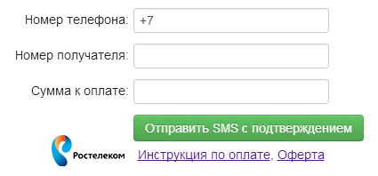
- К вам на телефон поступит SMS от номера 303 с запросом на подтверждение платежа и указанной суммой с учетом комиссии. Сумма будет списана с вашего мобильного счета только после подтверждения платежа.
- Отправьте ответное SMS с кодом подтверждения платежа, следуя инструкции в SMS-сообщении. (Отсутствие ответа на SMS в течение 15 минут расценивается как отказ от оплаты)
- Если вы подтвердили заказ, вам поступит SMS с подтверждением оплаты и номером заказа.
Условия и ограничения услуги "Мобильный платёж":
- Сумма единоразового платежа может составлять от 10 до 5 000 руб.
- Максимальная сумма платежей за сутки 15 000 руб.
- Максимальная сумма ежемесячного платежа — 40 000 руб.
- Количество платежей в сутки — не более 5
- Минимальная сумма остатка денежных средств на Лицевом счете Абонента после совершения платежа — 10 руб.
Актуальную информацию об услуге и условиях ее предоставления уточняйте на сайте оператора .
- Оплата услуг со счета мобильного телефона – Теле2
Оплата с мобильного счета для абонентов Tele2 – простой и удобный способ оплаты. Для оплаты с баланса вашего мобильного необходимо ввести номер телефона и подтвердить оплату ответом на полученное SMS: все очень просто и быстро!
Пошаговая инструкция:
- Выберите услугу или товар, который планируете оплатить.
- В форме платежа аккуратно заполните необходимые поля и нажмите кнопку «Отправить SMS с подтверждением». 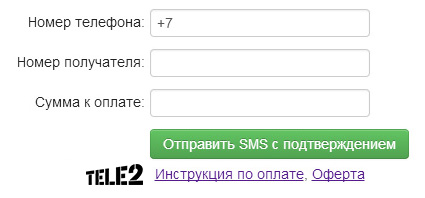
- На ваш мобильный телефон поступит SMS с запросом на подтверждение платежа и указанной суммой с учетом комиссии. Сумма будет списана с вашего мобильного счета только после подтверждения платежа.
- Отправьте ответное SMS с кодом подтверждения платежа, следуя инструкции в SMS-сообщении. (Отсутствие ответа на SMS в течение 15 минут расценивается как отказ от оплаты)
- Если вы подтвердили заказ, вам поступит SMS с подтверждением оплаты и номером заказа.
Пользуясь услугой оплаты с мобильного счета Tele2, вы соглашаетесь с условиями ее предоставления. Также актуальную информацию об услуге уточняйте на странице сайта оператора.